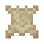
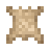

皮革是一种由兽皮制成的结实耐用的材料。它可以用来制作皮革盔甲、鞍、以及风箱。兽皮必须经过一系列复杂的工序之后才能变成皮革。首先是浸灰，然后是剖层，接着要脱灰，最后还要浸酸。

制皮的第一步自然是得先找到兽皮。世界各地的野生动物都会掉落兽皮。不同的动物掉落的兽皮大小会有所不同。
制皮还需要几件其他工具：
有了这些工具，你就可以准备开始制皮了！
配方: tfc:barrel/medium_soaked_hide
第一步是浸灰。这一步是用来清洗并软化兽皮上的杂质的。将兽皮密封浸泡在装有石灰水的大桶中 8 个小时即可。

浸泡好了的皮革还需要剖层，以此来移除皮革上残留的杂质。将一根原木横放在地上，然后再将皮革放置在原木上方。接着手持小刀对准皮革的每一个部分按右键。已经刮好了的部分会改变其外观。
皮革完全刮干净之后就可以将其从原木上取下了。你应该会得到一块刮制皮革。
配方: tfc:barrel/medium_prepared_hide
刮制皮革还需要在装有淡水的大桶里密封至少 8 小时。这是在鞣制前的最后一步清理步骤。
配方: tfc:barrel/medium_leather
最后，将脱完灰的预制皮革封入装有鞣酸的大桶中，等待 8 个小时。待鞣酸反应完全之后就能从桶中获得皮革啦！